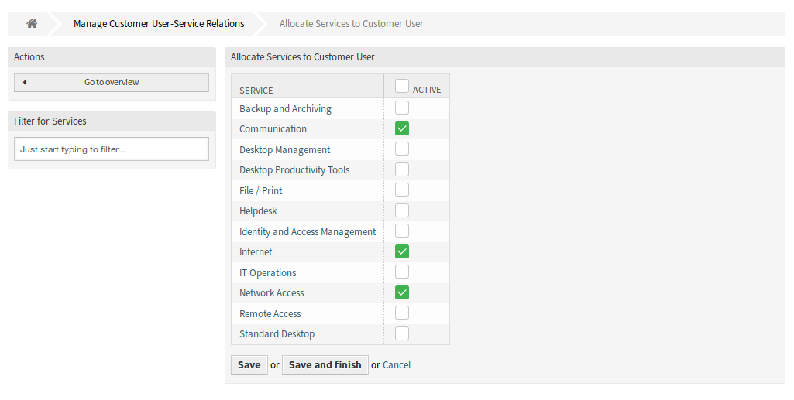

客户用户 ↔ 服务¶
使用此屏幕将一个或多个客户用户添加到一个或多个服务。 要使用此功能，至少需要向系统添加一个客户用户和一个服务。 管理屏幕位于 用户、组和角色 组的 客户用户 ↔ 服务 模块中。

管理客户-服务之间的关联
管理客户用户 ↔ 服务关联¶
若要为一个客户用户分配一些服务：
- 点击 客户用户 列表中的一个客户用户。
- 选择要分配给客户用户的服务。
- 点击 保存 或 保存并完成 按钮。

修改客户用户关联的服务
若要为一个服务分配一些客户用户：
- 点击 服务 列中的一个服务。
- 选择要分配给服务的客户用户。
- 点击 保存 或 保存并完成 按钮。

修改客户用户关联的服务
注解
如果将多个客户用户或服务添加到系统中，请使用搜索框查找特定客户用户，或使用过滤器框通过键入要过滤的名称来查找特定服务。
可以在两个屏幕中同时分配多个客户用户或服务。 另外，在关联屏幕中点击客户用户或服务将相应地打开 编辑客户用户 屏幕或 编辑服务 屏幕。
警告
访问客户用户或服务不提供到关联屏幕的返回链接。
注解
通过在列标题中设置复选框，将设置所选列中的所有复选框。
管理默认服务¶
可以添加默认服务，以便所有客户用户都可以访问它们。这样就避免了必须向每个客户用户添加每个服务。
若要编辑默认服务：
- 点击左侧边栏中的 编辑默认服务 按钮。
- 选择所有客户用户都可以选择的服务。
- 点击 保存 或 保存并完成 按钮。

分配服务到客户用户 屏幕
警告
混合使用默认服务和客户特定的服务可能会令人混淆。如果客户用户分配了特定的服务，则不应用缺省服务。